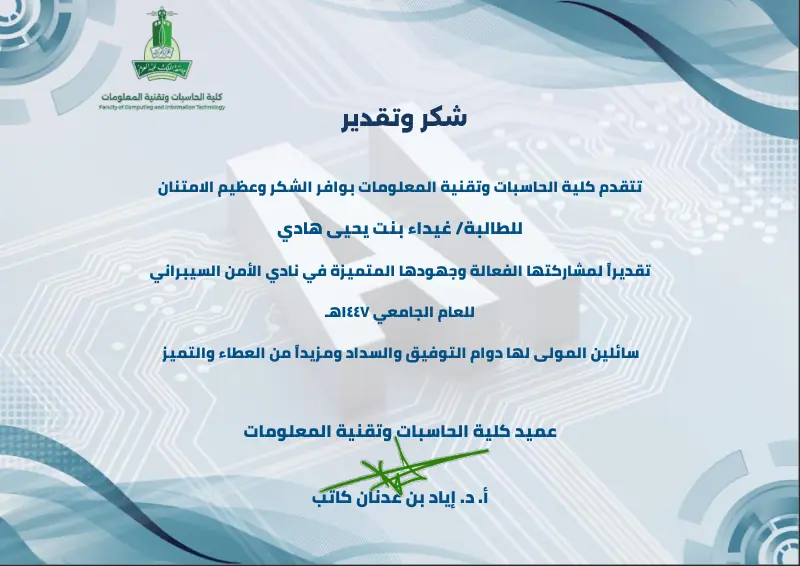
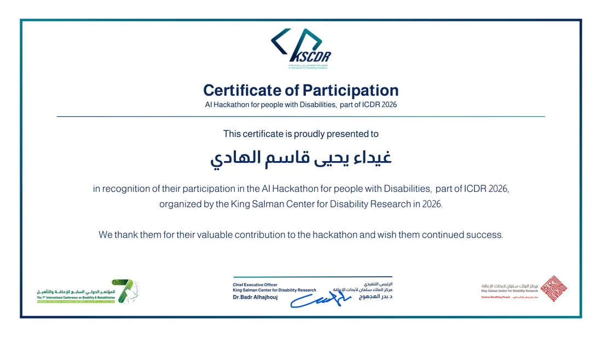
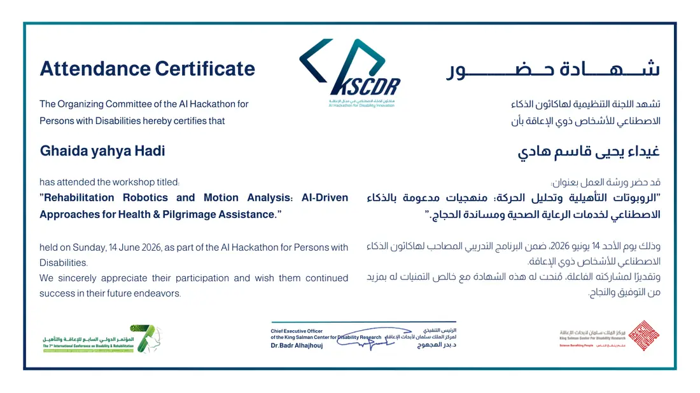
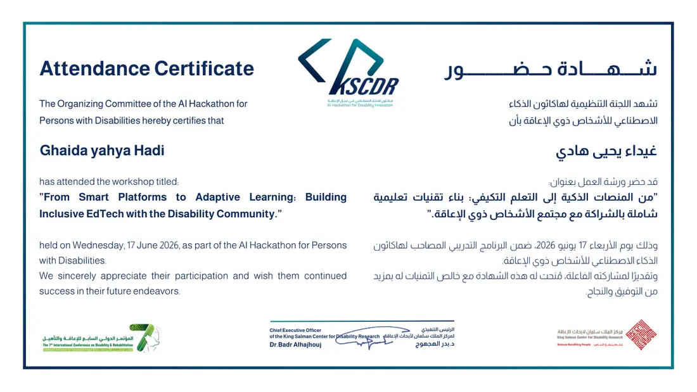
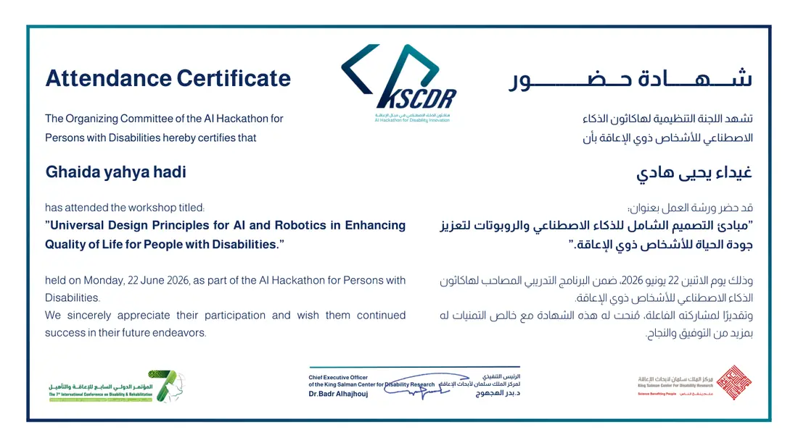
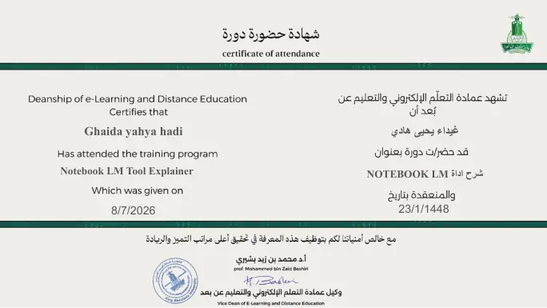
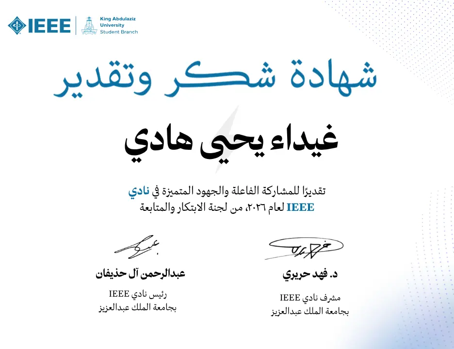

KING ABDULAZIZ UNIVERSITY · JEDDAH, SAUDI ARABIA
Bachelor's Degree in Information Technology
Building a foundation in programming, web development, networking, databases and software engineering.
CURRICULUM VITAE · 2026
A closer look at my experience, education, technical work and the communities I contribute to.
I am an Information Technology student at King Abdulaziz University who enjoys bringing together software development, user-centered design and responsible AI to create digital solutions with a real purpose.
I am particularly interested in practical systems that improve everyday experiences. I enjoy moving from an idea to a working product, refining it through research, prototyping, testing and thoughtful communication.
KING ABDULAZIZ UNIVERSITY · JEDDAH, SAUDI ARABIA
Building a foundation in programming, web development, networking, databases and software engineering.
Deanship of E-Learning and Distance Education
King Abdulaziz University
Took a product from early research through full-stack implementation, controlled AI integration, testing and presentation—while contributing to digital content production.
Developed the Smart Guide for Children's Language Delay , connecting React and TypeScript interfaces with Python/FastAPI services, data models, assessments, weekly plans and reports.
Structured a research-based knowledge base and integrated server-side Google Gemini explanations, while keeping assessment decisions rule-based.
Tested end-to-end workflows, fixed interface and integration issues, managed code with Git/GitHub, and prepared technical documentation and the final presentation.
Also contributed: Produced three digital content videos as part of a separate training activity and developed a professional e-portfolio.
Python, Java, HTML, CSS, React, TypeScript, FastAPI and OOP.
PostgreSQL, SQLAlchemy, APIs, Git, GitHub, UML, testing and requirements analysis.
Figma, UI/UX, Canva, Blender, Cisco Packet Tracer and technical documentation.
Selected training, recognition and workshops that reflect my interests in AI, accessibility and technology.

King Abdulaziz University · FCIT
Open Certificate ↗
King Salman Center for Disability Research · 2026
Open Certificate ↗
AI Hackathon Workshop · 2026
Open Certificate ↗
AI Hackathon Workshop · 2026
Open Certificate ↗
AI Hackathon Workshop · 2026
Open Certificate ↗
Deanship of E-Learning · 2026
Open Certificate ↗
Recognition for student-club contribution
Preview shownAlso completed Google UX Design – Foundations of User Experience Design.
Contributed to media design and awareness activities as a member of the Media Committee.
Supported monthly reports and the development of ideas through committee collaboration.
Languages Arabic & English
Explore my projects ↗